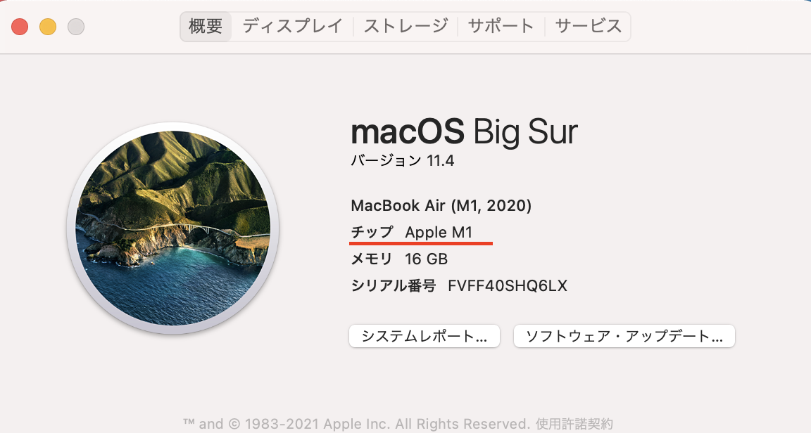
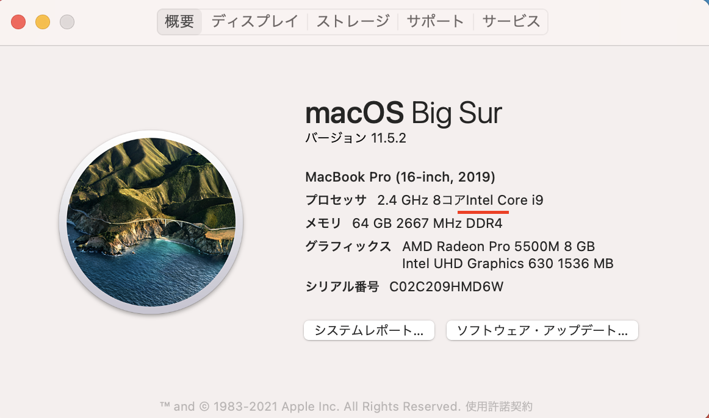

自分のパソコンが下記のどれに当たるかを確認してください。
特にMacの人はここを間違えるとセッティングの方法が大きく変わるので、下記の手順でしっかり確認してください。
【連絡】確認したら、
ここに自分のPCの種類を9/9（木）までに回答してください。
- Windows
- Mac (Apple Silicon：M1チップ)
- Mac (Intel)
【MacのIntel or AppleSiliconの見分け方】
自分のMacがApple Silicon(M1チップ)かIntelかの見分け方は下記の動画を参照して下さい。
チップのところに
■Apple M1と記載されていたら→Apple Silicon(M1チップ)

■Intelという文字が入っていたら→Intel
